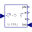

UtilitiesUtility classes used by rotational example models |
|
Package Contents
|  |
Input/output block of a direct inertia model |
|
Input/output block of an inverse inertia model |
|
|
Input/output block of a spring/damper model |
|
|
Input/output block of a spring model |
|
|
Linear 1D rotational spring and damper in parallel (phi and w are not used as states) |
Information
This information is part of the Modelica Standard Library maintained by the Modelica Association.
This package contains utility models and functions used by some of the example models from the rotational mechanics package.